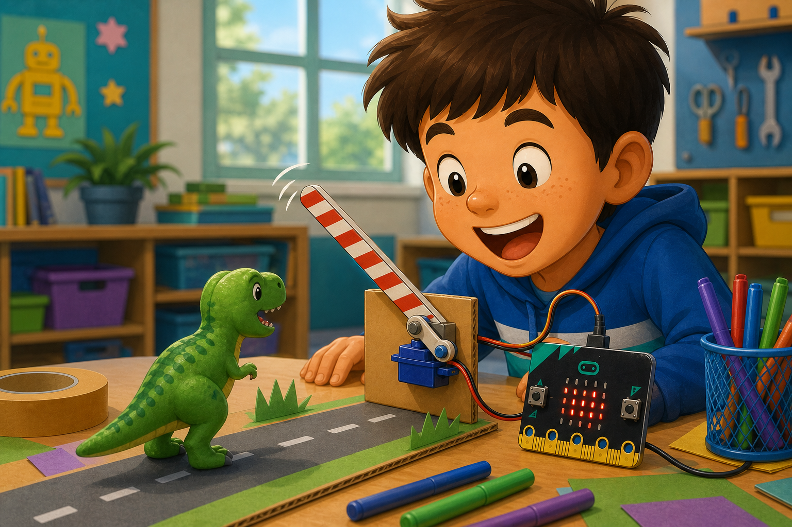

Robot arm
DetectButton A is pressed
→
DecideArm should lift
→
DoMove the servo
A servo motor turns to a position you choose, instead of spinning forever.
Your micro:bit sends a timed signal to the servo using one pin.
Use servos for robot arms, pointers, locks, gates, flaps, and wobbly creatures.

from microbit import *
pin0.set_analog_period(20)
pin0.write_analog(51)
sleep(1000)
pin0.write_analog(77)
sleep(1000)
pin0.write_analog(102)pins.servoWritePin(AnalogPin.P0, 0)
basic.pause(1000)
pins.servoWritePin(AnalogPin.P0, 90)
basic.pause(1000)
pins.servoWritePin(AnalogPin.P0, 180)GND to the micro:bit GND.